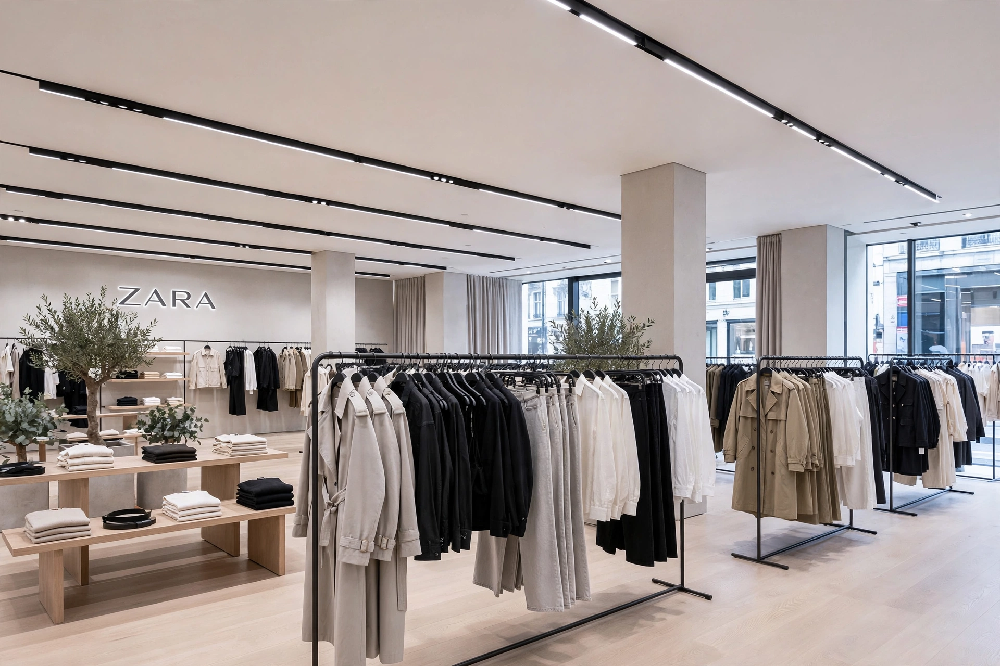

From Wikipedia, the free encyclopedia
| Zara | |
|---|---|
 | |
| Founded | 1975, A Coruña, Spain |
| Founder | Amancio Ortega |
| Parent | Inditex |
| Industry | Fast fashion retail |
Zara is a Spanish multinational retail clothing chain and the flagship brand of Inditex, the world's largest apparel retailer by some measures. Founded by Amancio Ortega in 1975 in A Coruña, Galicia, it sells clothing, accessories, shoes and beauty products for women, men and children.
Ortega opened the first store in 1975, originally naming it "Zorba" after the film Zorba the Greek before a nearby bar with the same name forced a rearrangement of the letters to "Zara". Expansion across Spain in the 1980s was followed by international stores from 1988. Zara Home (2003) and a major online launch (2010) extended the brand.
Zara exemplifies fast fashion: designs move from sketch to store in a few weeks, produced in limited runs near its Spanish logistics centres. Stores order twice weekly, inventory turns over rapidly, and advertising spending is famously minimal — the company relies on prime store locations instead. In recent years Zara has moved upmarket with larger flagships, higher-priced lines, charges for returns in some markets, and the Pre-Owned resale and repair platform.
Like other fast fashion brands, Zara faces criticism over labour conditions in supply chains, design-copying disputes, and textile waste, alongside praise for its logistics and responsiveness.